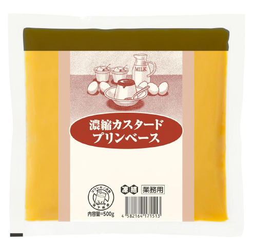
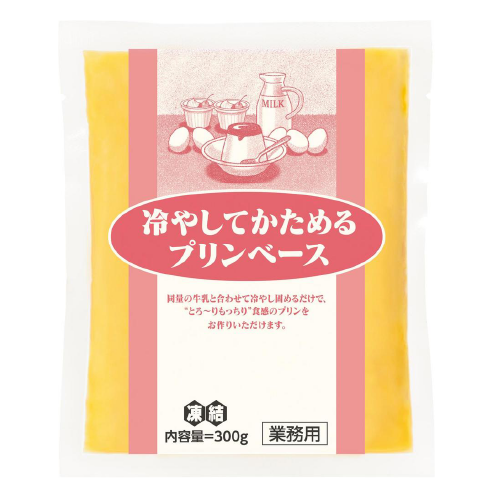

Nutritional Powerhouses
What Sets Japanese Eggs Apart
Fluffy When Scrambled
Packed with Nutrients
Beneficial to Health
Low in Calories
Always Fresh & Safe
Luscious & Creamy
Beautiful Orange Yolk
High in Protein
The Defining Factors of Japanese Eggs
Uncompromising Standards
in Japanese Egg Farming
Japanese eggs are subject to thorough inspection at grading and packaging facilities, where advanced technology guarantees that only the best eggs are selected. The health of the hens that lay these eggs is a top priority, with regular vaccinations and strict salmonella checks on their feed. Throughout the production process, strict measures are implemented to avoid any contamination.
So, when you eat a Japanese egg, you can be confident it's of the highest quality.
Kickstart Your Day with
Wholesome Nutrition
Japanese eggs are packed with essential nutrients like protein, potassium, and vitamins A, D, and B. They're also an excellent source of DHA, omega-3 fatty acids, lutein, and iron, making them a nutritional powerhouse. There's a reason why eggs are such a popular breakfast item. After a night's rest, consuming eggs mildly increases your body temperature. This acts as a natural stimulant that helps to jumpstart your energy levels for the day ahead.
Iconic Japanese Egg Dishes
Raw eggs are a common addition to everyday meals in Japan. Take Tamago Kake Gohan is a beloved breakfast staple where a fresh, raw egg is stirred into warm rice and seasoned with soy sauce for a creamy, nourishing morning treat.And then there's Sukiyaki, where you dip cooked meat into a smooth raw egg before digging in, cooling them down while adding a silky coating to the food.
Add nutritious Japanese eggs into your daily meals for a tasty boost that's good for you!
The Gold Standard in Egg Safety
Japanese eggs set a high standard for freshness and safety as they remain good for 21 days from when they're produced. In Japan, eggs play an essential ingredient in the kitchen. This drives farmers to constantly refine their production methods, and the cultural emphasis on quality has resulted in eggs that are outstanding.
Japanese hens consume a controlled diet of premium grains and vital nutrients. The hens lay eggs with yolks so golden and bright, they could rival the sun. These eggs also have an exceptionally savory taste, and thanks to efficient distribution, they reach stores quickly after being laid, ensuring you get that just-laid freshness with every crack of the shell.
Various Ways to Enjoy Japanese Eggs
Eggs Benedict
Poach eggs until whites are set and yolks are runny and place them atop toasted English muffins; an easy way to prepare this common Western breakfast item.
Carbonara
Mix raw egg yolks with grated pecorino romano to form a luscious paste that's added to spaghetti for creaminess.
Omelet with Fried Rice
Show off your cooking skills with this dish of fried rice wrapped in a layer of soft omelet.
Scrambled Eggs
Whip up this fluffy breakfast dish that's easily elevated with creme fraiche and cheese.
Salad with Soft-boiled Egg
Boost your salad's nutrition and flavour by adding an onsen egg for a saucy topping that takes your greens to the next level.
Fried Rice with Egg
Make fried rice even more satisfying by stirring in Japanese eggs during cooking or topping it with a sunny-side-up for a mouthwatering finish.
Since the beginning, we have adhered to the concept of "market fundamentalism".
In Japan, approximately 330 eggs are consumed annually per person. This is a higher rate of consumption in the world and so eggs are an essential part of the diet in Japan. There is also a "raw food culture" such as "TKG (egg over rice)". That is why we are consistent in keeping high levels of safety and quality of chicken eggs. In addition, the egg-related business must be a business that goes together with nature. It is necessary to be an eco-friendly business model. For example, the use of renewable energies and the use of domestic rice as feedstuffs. We will continue to work on business models that are green and eco-friendly.
Concentrated Custard Pudding Base
This pudding base produces authentic egg custards with traditional texture. Unlike modern puddings that are overly smooth, this product yields puddings that are perfectly balanced between soft and firm, with little effort.
Pudding Base 'Just Cooling'
Thick puddings can be made using this product by simply adding equal parts milk and chilling till firm. For variety, substitute milk with soy milk, juice, or whipped cream to create your own puddings.
